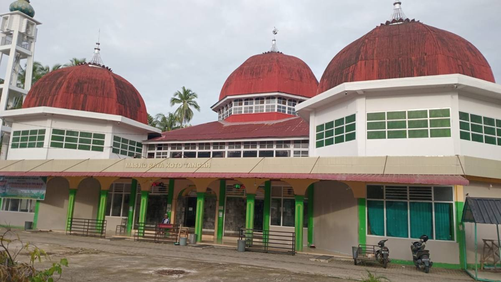
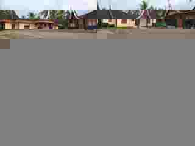
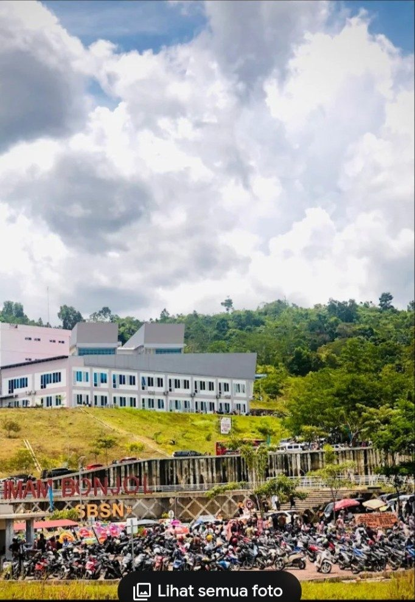
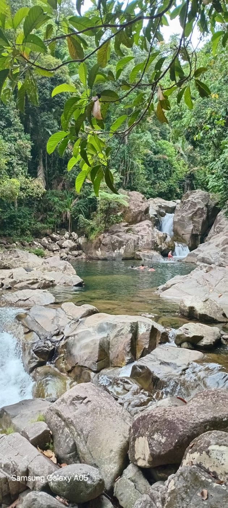
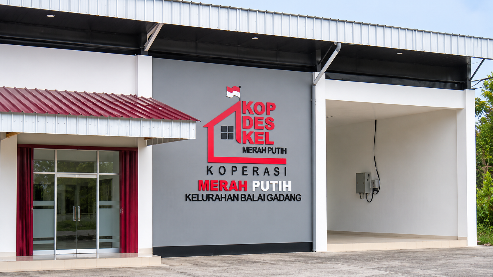
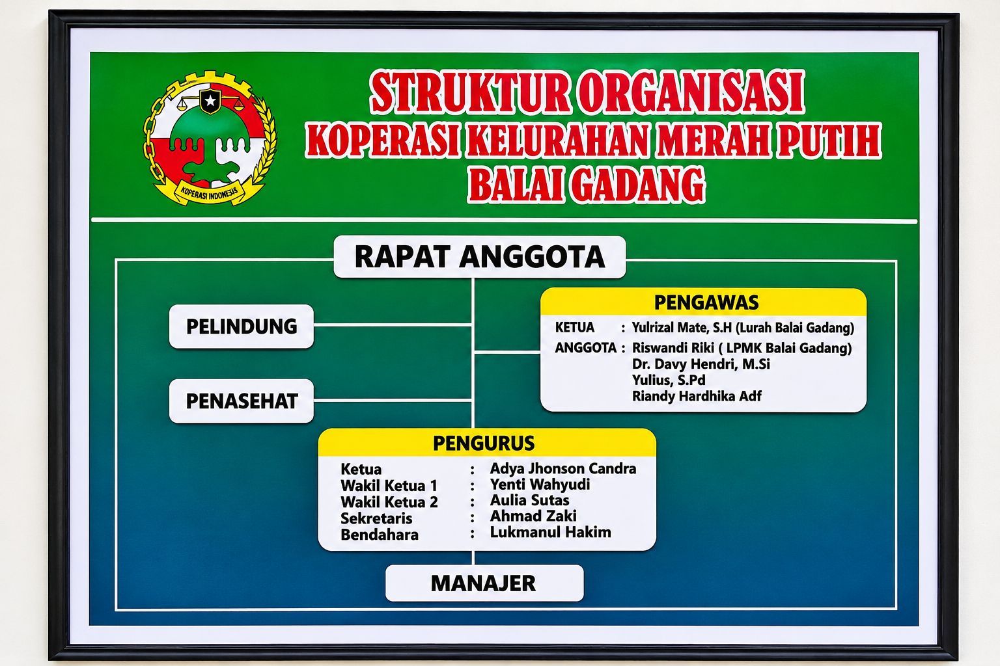

PORTAL DATA KELURAHANKecamatan Koto Tangah · Kota Padang · Sumatera Barat
⌂
DATA BALAI GADANGThe Green Gateway of Padang · Open Data · Nature · Heritage
Balai Gadang Dalam Angka
Mengenal wilayah melalui data. Portal statistik terpadu untuk melihat perkembangan penduduk, ekonomi lokal, rumah kost, fasilitas, dan kondisi lingkungan Balai Gadang.
Mengenal sejarah, wilayah, masyarakat, dan potensi Balai Gadang
Pengantar
Balai Gadang merupakan salah satu kelurahan di Kecamatan Koto Tangah, Kota Padang, Provinsi Sumatera Barat. Wilayah ini memiliki karakter geografis, sosial, ekonomi, dan lingkungan yang beragam. Portal Balai Gadang Dalam Angka disusun sebagai sarana informasi untuk mengenal perkembangan wilayah melalui data dan dokumentasi.
1. Sejarah Singkat
Catatan awal monografi menyebutkan bahwa pembentukan Kelurahan Balai Gadang berkaitan dengan penggabungan wilayah administratif terdahulu, antara lain Beringin, Air Dingin, Tanjung Aur, dan Sungai Bangek. Sejarah nama Balai Gadang, tahun pembentukan, serta dasar hukum penggabungannya masih perlu ditelusuri melalui arsip pemerintahan dan wawancara dengan tokoh masyarakat serta tokoh adat.
2. Letak Geografis dan Batas Wilayah
Balai Gadang terletak di Kecamatan Koto Tangah, bagian utara Kota Padang. Publikasi statistik kecamatan yang menjadi bahan awal mencatat luas wilayah sekitar 106,90 km². Batas administratif dan luas wilayah akan disesuaikan dengan peta resmi terbaru Pemerintah Kota Padang.
3. Kondisi Topografi dan Lingkungan
Bentang alam Balai Gadang mencakup kawasan permukiman, lahan pertanian, perkebunan, kawasan perbukitan, dan vegetasi alami. Kondisi topografi, elevasi, kemiringan lereng, jaringan sungai, serta tutupan lahan akan dikembangkan melalui pemetaan GIS dan pengumpulan data lapangan.
4. Pembagian Wilayah Administrasi
Pembagian wilayah administrasi menjadi dasar penyusunan data kependudukan dan pelayanan publik. Catatan awal menyebutkan 14 RW dan 58 RT, sementara sumber lain mencatat 59 RT. Daftar RW dan RT beserta peta wilayahnya akan ditampilkan setelah dikonfirmasi kepada pemerintah kelurahan.
5. Karakteristik Sosial dan Ekonomi
Kehidupan masyarakat Balai Gadang tumbuh dalam lingkungan sosial Minangkabau yang memiliki tradisi kekerabatan, kehidupan keagamaan, dan gotong royong. Aktivitas ekonomi masyarakat meliputi perdagangan, jasa, UMKM, pertanian, perkebunan, serta berbagai kegiatan produktif lainnya.
6. Potensi Wilayah dan Arah Pengembangan
Potensi Balai Gadang mencakup pengembangan pertanian dan agroforestri, wisata alam dan budaya, penguatan UMKM, peningkatan infrastruktur, serta pelestarian lingkungan. Pengembangan basis data digital diharapkan mendukung perencanaan pembangunan berbasis bukti dan kolaborasi antara pemerintah, masyarakat, akademisi, dan pelaku usaha.
Catatan: Profil ini merupakan draf awal. Informasi sejarah, batas wilayah, luas, topografi, serta jumlah RT/RW perlu diverifikasi menggunakan dokumen resmi sebelum ditetapkan sebagai informasi final.
Pemerintahan dan Tokoh Masyarakat
Dokumentasi foto pejabat dan unsur kelembagaan Kelurahan Balai Gadang
Yufrizal Maas, S.H.
Lurah Balai Gadang
Foto dikirim dan dikonfirmasi oleh pengelola portal. Periode jabatan belum dicantumkan.
Daftar ini akan diperluas setelah foto dan nama pejabat lainnya diterima serta diverifikasi. Informasi pribadi seperti nomor telepon tidak ditampilkan tanpa persetujuan publikasi.
Instansi Pelayanan Publik & Keadaan Darurat
Kanal resmi untuk administrasi, keamanan, kesehatan, kebakaran, dan kebencanaan
Keadaan darurat di Kota Padang: hubungi 112. Layanan Nomor Tunggal Panggilan Darurat Kota Padang beroperasi 24 jam dan mengintegrasikan penanganan kebakaran, kecelakaan, gangguan keamanan, bencana, serta kegawatdaruratan lainnya. Untuk kegawatdaruratan medis, tersedia PSC 119.
☎
Padang Command Center 112
112
Nomor darurat terpadu gratis, 24 jam untuk kebakaran, kecelakaan, bencana, gangguan keamanan, dan kejadian darurat lainnya.
Nomor telepon instansi selain 112 dan 119 bersumber dari direktori/laman instansi yang ditemukan saat penyusunan. Sebelum dipakai dalam keadaan mendesak, konfirmasikan kembali ke kanal resmi. Jika situasi mengancam jiwa, utamakan panggilan 112.
Sejarah, Alam & Ekowisata Balai Gadang
Jejak wilayah, sungai, pemandian alam, air terjun, dan wisata berbasis masyarakat
Sejarah dan identitas kawasan
Balai Gadang berada di Kecamatan Koto Tangah, Kota Padang. Portal Desa Wisata Kementerian Pariwisata memperkenalkan Balai Gadang sebagai kawasan yang memiliki potensi wisata alam, seni, dan budaya. Sejumlah kelompok sadar wisata yang tercatat untuk kelurahan ini antara lain Baringin Balai Gadang, Sungai Bangek, dan Lubuk Lukum.
Riwayat pembentukan kelurahan, asal-usul nama Balai Gadang, tokoh pendiri, serta perkembangan kampung dan nagari perlu dilengkapi melalui arsip kelurahan, dokumen adat, dan wawancara dengan niniak mamak serta tokoh masyarakat. Karena itu, bagian ini tidak menetapkan tahun atau cerita asal-usul yang belum memiliki dokumen pendukung.
Masjid bersejarah dan pusat kehidupan keagamaan masyarakat Balai Gadang

Masjid Raya Nagari Koto Tangah
Berlokasi di Jalan Hidayah Baringin, Kelurahan Balai Gadang. Data Sistem Informasi Masjid Kementerian Agama mencatat masjid jami ini berdiri pada 1914 dan berstatus tanah wakaf. Masjid ini menjadi salah satu penanda sejarah kehidupan keagamaan masyarakat Koto Tangah.
Terletak di kawasan Air Dingin, Kelurahan Balai Gadang. Masjid ini menjadi pusat ibadah, pendidikan Al-Qur’an, dan kegiatan sosial keagamaan. Renovasinya diresmikan pada Juni 2026, sebagaimana diberitakan Pemerintah Kota Padang.
Etika kunjungan: berpakaian sopan, menjaga ketenangan saat ibadah berlangsung, meminta izin sebelum mengambil foto kegiatan atau jamaah, serta menghormati pengurus dan masyarakat setempat. Informasi sejarah Masjid Raya Nagari Koto Tangah merujuk data SIMAS Kementerian Agama; informasi Masjid Raya Nurul Yaqin merujuk pemberitaan Pemko Padang.
Wisata Adat & Arsitektur Minangkabau
Rumah gadang dan balai adat sebagai ruang identitas, musyawarah, dan pelestarian tradisi nagari
Balai Adat Kerapatan Adat Nagari Koto Tangah

Rumah Gadang Koto Tangah
Dokumentasi foto dari pengguna portal. Urutan gambar: Masjid Raya Nagari Koto Tangah, Masjid Jami Nurul Yaqin Air Dingin, kompleks rumah gadang, dan balai-balai adat Kerapatan Adat Nagari Koto Tangah.
Rumah Gadang dan Balai Adat Kerapatan Adat Nagari Koto Tangah
Balai Gadang memiliki ruang budaya Minangkabau yang tercermin melalui arsitektur rumah gadang dan keberadaan balai-balai adat Kerapatan Adat Nagari Koto Tangah. Dokumentasi yang ditampilkan memperlihatkan bangunan rumah gadang serta papan nama balai adat yang menyebut Kerapatan Adat Nagari Koto Tangah dan Kelurahan Balai Gadang. Kawasan ini berpotensi dikembangkan sebagai wisata budaya berbasis pengenalan arsitektur tradisional, sejarah nagari, nilai adat, dan praktik musyawarah.
Informasi mengenai sejarah bangunan, fungsi adat, tokoh atau pemangku adat, jadwal kegiatan, serta tata cara kunjungan perlu dilengkapi melalui konfirmasi kepada Kerapatan Adat Nagari, niniak mamak, dan pengelola setempat. Kunjungan wisata harus memperoleh izin dan tidak mengganggu kegiatan adat yang sedang berlangsung.
Pendidikan tinggi sebagai bagian dari identitas dan kebanggaan Balai Gadang

Foto 1 — Panorama kampus dan lanskap perbukitan Sungai Bangek.Foto 2 — Gedung Rektorat UIN Imam Bonjol Padang.
Dokumentasi foto disampaikan oleh pengguna portal. Pastikan izin pemilik foto dan persetujuan penggunaan dari pihak terkait sebelum publikasi terbuka.
Kampus III UIN Imam Bonjol Padang
Kawasan pendidikan tinggi di Sungai Bangek, Kelurahan Balai Gadang. Kampus ini menjadi bagian penting dari identitas kawasan, memperkuat citra Balai Gadang sebagai lingkungan yang dekat dengan pendidikan, ilmu pengetahuan, dan pengembangan masyarakat. Potensi kunjungan dapat diarahkan pada pengenalan lingkungan kampus, arsitektur, dan lanskap sekitar sesuai kebijakan serta izin pengelola.
Catatan kunjungan: kampus merupakan lingkungan akademik, bukan objek wisata bebas. Pengunjung wajib menghormati kegiatan belajar, tata tertib, keamanan, dan ketentuan izin dari pihak kampus. Foto dan kegiatan komersial harus memperoleh persetujuan pengelola.

Lubuak Ngalauan
Destinasi wisata alam dengan aliran air, kolam alami, bebatuan, dan vegetasi hutan sebagaimana terlihat pada dokumentasi pengunjung. Daya tarik utamanya adalah suasana alam dan air terjun kecil. Informasi akses, pengelola, fasilitas, biaya, serta kondisi keselamatan perlu dikonfirmasi langsung kepada masyarakat atau pengelola setempat sebelum kunjungan.
Foto dokumentasi dari pengguna portal. Lokasi dan akses perlu diverifikasi bersama pengelola setempat.
Lubuk Lukum
Wisata pemandian alam di aliran Batang Air Dingin. Dikenal dengan suasana sungai, tempat duduk di tepi air, dan pengembangan ikan lokal. Tetap perhatikan arus serta kondisi sungai setelah hujan.
Kawasan air terjun dan kolam alami yang disebut dalam daftar atraksi wisata Balai Gadang. Nama titik, akses trekking, dan kondisi keselamatan perlu dikonfirmasi kepada pengelola setempat sebelum kunjungan.
Bangunan pengendali aliran sungai yang juga dikenal sebagai tempat rekreasi warga. Area bendungan memiliki risiko arus dan kedalaman; jangan melompat atau berenang di luar area yang dinyatakan aman.
Foto dokumentasi resmi menunggu konfirmasi pengelola
Pemandian Lori
Disebut sebagai salah satu destinasi dalam profil Desa Wisata Balai Gadang. Lokasi administratif dan pengelolaannya perlu dipastikan kembali karena beberapa sumber menempatkan kawasan pemandian Lori di Lubuk Minturun.
Foto dokumentasi resmi menunggu konfirmasi pengelola
Pincuran Tujuh
Nama lokasi yang tercatat dalam kajian potensi wisata Kecamatan Koto Tangah sebagai potensi wisata alam Balai Gadang. Informasi akses, fasilitas, dan kondisi terkini masih perlu pendataan lapangan.
Foto dokumentasi resmi menunggu konfirmasi pengelola
Sungai Bangek Ecotourism
Wisata berbasis sungai dan masyarakat. Profil Jadesta menyebut beberapa spot pemandian, terapi ikan garing, camping ground, serta atraksi seni tradisional seperti randai dan silek.
Catatan foto: gambar Lubuk Lukum dan Cek Dam Koto Tuo ditautkan dari dokumentasi media; foto air terjun adalah foto referensi kawasan Sungai Bangek, bukan verifikasi spesifik titik Ngungun Saok. Foto Pemandian Lori, Pincuran Tujuh, dan titik Sungai Bangek lainnya akan diganti dengan dokumentasi resmi setelah diperoleh dari Pokdarwis/pengelola.
Ekowisata dan konservasi
Pengembangan ekowisata dapat diarahkan pada kebersihan sungai, perlindungan sempadan dan vegetasi, pengelolaan sampah, keselamatan pengunjung, edukasi keanekaragaman hayati, pemberdayaan Pokdarwis, serta manfaat ekonomi bagi warga. Pengunjung dianjurkan tidak meninggalkan sampah, tidak merusak vegetasi, dan mematuhi arahan pengelola.
Demografi
Struktur penduduk dan rumah tangga
Komposisi kelompok umur
Proporsi penduduk menurut kelompok usia
Grafik akan tampil setelah data demografi dimasukkan dan diverifikasi.
Profil kependudukan
Indikator tahun terpilih
Belum ada data demografi terverifikasi. Data kosong tidak ditampilkan sebagai angka nol.
Rumah Kost & Hunian Sewa
Basis data hunian, kapasitas, dan tingkat keterisian
Kamar terisi
—
kamar
Kamar kosong
—
kamar
Tingkat okupansi
—
terisi / tersedia
Tarif median
—
rupiah / bulan · bila tersedia
Kode Kost
Kelompok lokasi
Kamar tersedia
Terisi
Fasilitas ringkas
Status data
Belum ada data rumah kost yang dipublikasikan.
Alamat rinci, nama pemilik, nomor kontak, dan identitas penghuni tidak ditampilkan pada portal publik.
Ekonomi Lokal
UMKM, mata pencaharian, dan aktivitas ekonomi
UMKM terdata
—
unit usaha
Kategori usaha
—
kategori teridentifikasi
Penduduk bekerja
—
orang · bila tersedia
Fasilitas umum
—
titik terdata
Koperasi Kelurahan Merah Putih Balai Gadang
Dokumentasi gedung dan struktur organisasi koperasi

Gedung Koperasi Merah Putih
Dokumentasi gedung Koperasi Kelurahan Merah Putih Balai Gadang.

Struktur Organisasi Koperasi
Dokumentasi struktur kelembagaan koperasi. Nama dan jabatan mengikuti papan dokumentasi; konfirmasi kepada pengurus diperlukan untuk pembaruan resmi.
Berita Kelurahan Balai Gadang
Informasi kegiatan pemerintahan, pelayanan publik, pembangunan, koperasi, UMKM, sosial dan budaya
Berita ditampilkan setelah dipublikasikan oleh pengelola portal. Video dan tautan sumber disertakan untuk menjaga keterlacakan informasi.
Memuat berita terbaru…
Direktori UMKM Balai Gadang
Usaha lokal, produk unggulan, dan informasi kontak yang telah disetujui untuk publikasi
Profil usaha ditampilkan setelah diverifikasi. Informasi pemilik dan kontak hanya ditampilkan jika pemilik usaha menyetujui publikasinya.
Memuat direktori UMKM…
Admin Panel Kelurahan
Pengelolaan berita dan direktori UMKM untuk petugas yang memiliki akun dan hak akses
Panel ini hanya untuk staf terdaftar. Hak akses diperiksa dari profil peran di Supabase; jangan membagikan kata sandi kepada pihak lain.
Memuat panel pengelola…
Fasilitas & Infrastruktur
Pendidikan, kesehatan, ibadah, jalan, dan layanan publik
Kategori
Jumlah
Periode
Status
Data fasilitas belum tersedia.
Lingkungan & Karbon
Terhubung dengan Balai Gadang Carbon — Landscape Carbon Management System
Tutupan pohon
—
hektare
Area agroforestri
—
hektare
Stok karbon
—
tCO₂e · bila tersedia
Petak pemantauan
—
PSP / cluster inventory
Data lingkungan ditampilkan berdasarkan hasil pemetaan dan pemantauan yang memiliki sumber, tanggal pengukuran, serta status verifikasi. Integrasi tidak mengubah atau menghapus modul pada aplikasi Android Balai Gadang Carbon.
Balai Gadang Carbon
Landscape Carbon Management System
Sistem Pengelolaan Karbon Lanskap
Platform digital untuk pemetaan tutupan lahan, inventarisasi vegetasi, penghitungan karbon, monitoring, rehabilitasi, agroforestri, dan pengembangan ekonomi hijau di Balai Gadang.
Pemetaan KTH Balai Gadang dan usulan HKm Saiba, termasuk tutupan lahan dan kondisi geografis.
🌳
Carbon Calculator
Penghitungan biomassa atas permukaan, biomassa bawah permukaan, stok karbon, dan ekuivalen CO₂.
Modul aplikasi Android
▦
MRV System
Monitoring, Reporting and Verification untuk dokumentasi dan pemantauan karbon.
Modul aplikasi Android
♧
Rehabilitasi
Dokumentasi kegiatan rehabilitasi, penanaman, dan pemulihan vegetasi.
Modul aplikasi Android
🌱
Agroforestry
Pengembangan sistem agroforestri dan pemantauan potensi hasil lahan.
Modul aplikasi Android
🍯
Ekonomi Madu
Dokumentasi potensi madu dan pengembangan ekonomi masyarakat.
Modul aplikasi Android
◎
ESG
Informasi aspek lingkungan, sosial, dan tata kelola pengelolaan lanskap.
Modul aplikasi Android
Rp
Keuangan
Pengelolaan informasi pembiayaan, kegiatan, dan potensi ekonomi karbon.
Modul aplikasi Android
Integrasi ini merupakan halaman pengenalan modul. Fungsi kamera, GPS, penyimpanan lokal, input lapangan, dan kalkulasi asli aplikasi Android memerlukan implementasi web tersendiri atau tetap dijalankan melalui APK Balai Gadang Carbon.
Peta Digital Balai Gadang
Sebaran rumah kost, fasilitas, UMKM, dan area pemantauan karbon
Memuat peta dasar dan mencoba mengambil geometri batas referensi dari layanan Badan Informasi Geospasial…
Catatan: layer batas yang dicoba dimuat berasal dari layanan BIG edisi 2020 dan bersifat referensi kartografis, bukan pengganti dokumen penetapan batas terbaru Pemerintah Kota Padang. Titik fasilitas belum ditampilkan karena koordinat fasilitas yang telah diverifikasi dan disetujui untuk publikasi belum tersedia.
Sumber & Metadata
Transparansi dan kualitas data
Setiap indikator idealnya mencantumkan sumber data, tahun/periode, tanggal pembaruan, satuan, metode pengumpulan, dan status verifikasi. Data administratif dapat bersumber dari kelurahan; data statistik dari BPS; data kost dan UMKM dari pendataan lapangan; data lingkungan dari Balai Gadang Carbon.
Mode tampilan: prototipe. Konfigurasi Supabase belum diisi.